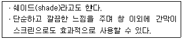
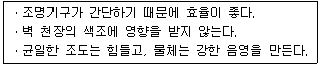
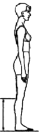
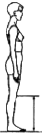
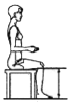
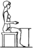
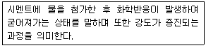
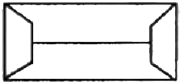

실내건축산업기사 (2011-06-12 기출문제)
1과목: 실내디자인론
1. 공간에 관한 설명 중 옳지 않은 것은?(오류 신고가 접수된 문제입니다. 반드시 정답과 해설을 확인하시기 바랍니다.)
- 직사각형의 명면형을 갖는 공간 형태는 강한 방향성을 갖는다.
- 공간은 사용자가 보는 위치에 따라 시각적으로 수없이 변화한다.
- 실내의 공간은 건축물의 구조적 요소인 벽, 바닥, 기초, 천장, 가구에 의해 한정된다.
- 공간은 적극적인 공간(posit space)과 소극적인 공간(negat spece)으로 나눌 수 있다.
(정답률: 59%)

2. 실내공간의 기본적 요소에 대한 설명 중 옳지 않은 것은?
- 바닥은 인간의 감각 중 촉각적 요소와 관계가 밀접하다.
- 바닥은 마감재를 다르게 하여 공간의 영역을 구분할 수 있다.
- 천장을 낮추면 친근하고 아늑한 공간이 되고 높이면 확대감을 줄 수 있다.
- 상징적 경계를 나타내는 벽체는 시각적인 방해가 되지 않는 높이 1200mm 이하의 낮은 벽체이다.
(정답률: 79%)
3. 천창(天窓)에 대한 설명으로 옳지 않은 것은?
- 벽면을 다양하게 활용할 수 있다.
- 같은 면적의 측창보다 채광량이 많다.
- 차열, 통풍에 불리하고 개방감도 적다.
- 시공과 개폐 및 기타 보수관리가 용이하다.
(정답률: 60%)
4. 디자인 요소 중 2차원적 형태가 가지는 물리적 특성이 아닌 것은?
- 질감
- 명도
- 패턴
- 부피
(정답률: 89%)
5. 다음 중 비정형균형에 대한 설명으로 옳은 것은?
- 좌우대칭, 방사대칭으로 주로 표현된다.
- 대칭의 구성형식이며, 가장 완전한 균형의 상태이다.
- 단순하고 엄숙하며 완고하고 변화가 없는 정적인 것이다.
- 물리적으로는 불균형이지만 시각적으로 힘의 정도에 의해 균형을 이룬 것이다.
(정답률: 88%)
6. 불완전한 형을 사람들에게 순간적으로 보여줄 때 이를 완전한 형으로 지각하다는 것과 관련된 형태의 지각 심리는?
- 근접성
- 유사성
- 연속성
- 폐쇄성
(정답률: 66%)
7. 전시실의 순회형식 중 연속순로 형식에 대한 설명으로 옳은 것은?
- 연속된 전시실의 한쪽 복도에 의해서 각 실을 배치한 형식이다.
- 각 실에 직접 들어갈 수 있으며 필요시에는 자유로이 독립적으로 폐쇄할 수 있다.
- 1실을 폐쇄할 경우 전체 동선이 막히게 되므로 비교적 소규모의 전시실에 적합하다.
- 중심부에 하나의 큰 홀을 두고 그 주위에 각 전시실을 배치하여 자유로이 출입하는 형식이다.
(정답률: 75%)
8. 점과 선에 대한 설명으로 옳지 않은 것은?
- 공간에 한 점을 두면 집중효과가 있다.
- 점은 기하학적으로 크기는 없고 위치만 존재한다.
- 사선은 유연함, 우아함, 부드러움등의 여성적인 느낌을 준다.
- 여러 개의 선을 이용하여 움직임, 속도감을 시각적으로 표현할 수 있다.
(정답률: 81%)
9. 실내디자인에 앞서 대상공간에 대해 디자이너가 파악해야 할 외적 작용요소가 아닌 것은?
- 공간 사용자의 수
- 전기, 냉난방 설비시설
- 비상구 등 긴급 피난시설
- 기존 건물의 용도 및 법적인 규정
(정답률: 64%)
10. 실내디자인 작업에서 고려해야 할 조건 중 경제적 조건에 해당하는 것은?
- 심미적, 심리적 예술 욕구를 충족시킬 수 있는 아름다움이 있어야 한다.
- 전체 공간구성이 합리적이고, 각 공간의 기능이 최대로 발휘되어야 한다.
- 새로운 가치의 효과를 창출할 수 있도록 개성 있는 표현이 이루어져야 한다.
- 최소의 자원을 투입하여 공간의 사용자가 최대로 만족 할 수 있는 효과가 이루어지도록 하여야 한다.
(정답률: 86%)
11. 다음 설명에 알맞은 블라인드(blind)의 종류는?

- 롤 블라인드
- 로만 블라인드
- 버티컬 블라인드
- 베네시안 블라인드
(정답률: 85%)
12. 호텔의 중심 기능으로 모든 동선체계의 시작이 되는 공간은?
- 린넨실
- 연회장
- 로비
- 객실
(정답률: 92%)
13. 실내디자인에 대한 설명 중 옳지 않은 것은?
- 인간생활의 쾌적성을 추구하는 디자인 활동이다.
- 미적, 기능적 공간을 창출하는 디자인 행위이다.
- 전체 매스의 구조와 디자인을 완성하는 전문과정이다.
- 디자인 요소를 반영하여 인간환경을 구축하는 작업이다.
(정답률: 79%)
14. 다음 중 전시공간의 규모 설정에 영향을 주는 요인과 가장 거리가 먼 것은?
- 전시방법
- 전시의 목적
- 전시공간 평면형태
- 전시자료의 크기와 수량
(정답률: 68%)
15. 주거공간을 주 행동에 의해 구분할 경우, 다음 중 사회공간에 속하지 않는 것은?
- 거실
- 식당
- 서재
- 응접실
(정답률: 92%)
16. 다음 중 황금비율로 가장 알맞은 것은?
- 1:0.632
- 1:1.414
- 1:1.618
- 1:3.141
(정답률: 93%)
17. 바르셀로나 체어를 디자인한 건축가는?
- 마르셀 브로이어(Marcel Breuer)
- 루이스 설리반(Louis Sullivan)
- 미스 반 데어 로에(Miss van dar Rohe)
- 프랭크 로이드 라이트(Frank Lloyd Wright)
(정답률: 74%)
18. 다음 중 평면계획시 고려해야 할 사항과 가장 거리가 먼 것은?
- 동선처리
- 조명분포
- 가구배치
- 출입구의 위치
(정답률: 86%)
19. 실내디자인의 전개과정으로 가장 알맞은 것은?
- 프로젝트기획 - 디자인계획 - 기본설계 - 실시설계
- 디자인계획 - 프로젝트기획 - 기본설계 - 실시설계
- 기본설계 - 프로젝트기획- 실시설계 - 디자인계획
- 실시설계 - 기본설계 - 디자인계획 - 프로젝트기획
(정답률: 90%)
20. 디자인 프로세스에 대한 설명으로 옳지 않은 것은?
- 디자인 문제 해결 과정이라 할 수 있다.
- 디자인의 결과는 디자인 프로세스에 의해 영향을 받게 되므로 반드시 필요하다
- 디자인을 수행함에 있어 체계적으로 획일화한 프로세스는 모든 디자인 문제를 해결할 수 있다.
- 창조적인 사고, 기술적인 해결 능력, 경제 및 인간가치 등의 종합적이고 학제적인 접근이 필요하다.
(정답률: 69%)
2과목: 색채 및 인간공학
21. 인간-기계 시스템을 인간에 의한 제어의 정도에 따라 수동시스템, 기계화 시스템, 자동화 시스템으로 분류할 때, 다음 중 자동화 시스템에 관한 설명으로 틀린 것은?
- 기계는 동력원을 제공한다
- 인간은 감시, 정비유지 등을 담당한다.
- 표시장치로부터 정보를 얻어 인간이 조종장치를 통해 기계를 통제한다.
- 기계는 감지, 정보처리, 의사결정 등을 프로그램에 의해 수행한다.
(정답률: 51%)
22. 다음 중 중작업, 경작업, 정밀한 작업 등을 서서 하는 작업대의 높이를 설계하는데 있어 그 기준이 되는 신체의 부위로 가장 적절한 것은?
- 손목
- 팔꿈치
- 배꼽
- 어깨
(정답률: 74%)
23. 인간과 기계의 능력을 비교하였을 때 다음 중 기계가 인간보다 우수한 기능은?
- 과업 수행에 대한 융통성
- 새로운 방법의 창조 능력
- 장시간 지속된 연속가동성
- 예기치못한 사건에 대한 감지 능력
(정답률: 82%)
24. 다음 설명에 해당하는 조명 방법은?

- 직접조명
- 간접조명
- 보상조명
- 전반조명
(정답률: 73%)
25. 다음 중 음향과 능률에 관한 설명으로 옳은 것은?
- 소음은 장시간 노출되어도 순응되지 않는다.
- 낮은 진동수의 소음이 높은 진동수의 소음보다 더 시끄럽다.
- 최소한의 소음이라도 근육의 긴장이 증진되어 에너지를 허비하게 된다.
- 시각의 원근조정, 원근감, 암순응, 거리 판정 등에서 소음의 영향은 크게 미치지 않는다.
(정답률: 42%)
26. 다음 중 한국인 인체치수조사 사업에 있어 무릎높이의 측정방법으로 옳은 것은?




(정답률: 58%)
27. 근육운동의 시작시 서서히 증가한 산소소비량은 운동이 종료된 후에도 일정 기간 산소를 더 필요하게 되는데 이를 무엇이라 하는가?
- 기초대사
- 산소부채
- 산소지속성량
- 최대산소소비능력
(정답률: 52%)
28. 다음 중 외부의 자극이 사라진 뒤에도 감각 경험이 지속되어 얼마동안 상이 남아 있는 현상을 무엇이라 하는가?
- 잔상
- 환상
- 상상
- 추상
(정답률: 90%)
29. 다음 중 구성요소 배치의 원칙에 해당하지 않는 것은?
- 중요도의 원칙
- 기능성의 원칙
- 사용빈도의 원칙
- 작업강도의 원칙
(정답률: 77%)
30. 다음 중 신체와 환경 사이의 열교환이 이루어지는 과정과 관련이 가장 적은 것은?
- 기압
- 전도
- 증발
- 대류
(정답률: 47%)
31. 지역의 명칭에서 유래한 색 이름이 아닌 것은?
- 나일 블루
- 코발트 블루
- 하바나
- 프러시안 블루
(정답률: 66%)
32. 다음 색채의 온도감에 관한 설명 중 틀린 것은?
- 빨강, 노랑, 주황은 난색이다.
- 청록, 파랑, 남색은 한색이다
- 연두, 보라는 중성색이다.
- 무채색에서 저명도색은 차가운 느낌을 준다.
(정답률: 67%)
33. 색채조절(Color conditioning)에 관한 설명 중 가장 부적합한 것은?
- 미국의 기업체에서 먼저 개발했고 기능배색이라고도 한다.
- 환경색이나 안전색 등으로 나누어 활용한다.
- 색채가 지닌 기능과 효과를 최대로 살리는 것이다.
- 기업체 이외의 공공건물이나 장소에는 부적당하다.
(정답률: 86%)
34. 오스트발트(Ostwald)의 조화론 중 등흑계열 조화에 해당되는 것은?
- pa - pg - pn
- pa - ia - ca
- ca - ga - ge
- gc - lg - pl
(정답률: 63%)
35. 조화배색에 관한 설명 중 틀린 것은?
- 대비조화는 다이나믹한 느낌을 준다.
- 동일 유사조화는 강렬한 느낌을 준다.
- 차이가 애매한 색끼리의 배색에서는 그 사이에 가는 띠를 넣어서 애매함을 해소할 수 있다.
- 보색배색은 대비조화를 가져온다.
(정답률: 82%)
36. 눈의 구조 중 카메라의 조리개와 같은 작용을 하는 것은?
- 홍채
- 수정채
- 망막
- 공막
(정답률: 58%)
37. 소방차에 빨간색을 사용하는 원리가 아닌 것은?
- 연상
- 주목성
- 대비
- 상징성
(정답률: 75%)
38. 보색 상호간의 혼합 결과는?
- 무채색
- 유채색
- 인근색
- 유사색
(정답률: 65%)
39. 일반적인 색채조절의 용도별 배색에 관한 내용으로 가장 거리가 먼 것은?
- 천장 : 빛의 발산을 이용하여 반사율이 가장 낮은 색을 이용한다
- 벽 : 빛의 발산을 이용하는 것이 좋으나 천장보다 명도가 낮은 것이 좋다.
- 바닥 : 아주 밝게 하면 심리적 불안감이 생길 수 있다.
- 걸레받이 : 방의 형태와 바닥면적의 스케일감을 명료하게 하는 것으로 어두운 색채가 선택된다.
(정답률: 71%)
40. 베졸드 효과와 관련이 있는 것은?
- 색의 대비
- 동화현상
- 연상과 상징
- 계시대비
(정답률: 66%)
3과목: 건축재료
41. 목재의 강도에 관한 설명 중에서 옳지 않은 것은?
- 함수율이 높을수록 강도가 크다.
- 심재가 변재보다 강도가 크다.
- 옹이가 많은 것은 강도가 작다.
- 추재는 일반적으로 춘재보다 강도가 크다.
(정답률: 72%)
42. 강의 기계적 가공법 중 회전하는 롤러에 가열상태의 강을 끼워 성형해 가는 방법은?
- 압출
- 압연
- 사출
- 단조
(정답률: 75%)
43. 점토의 종류별 특성과 용도에 대한 설명으로 옳지 않은 것은?
- 자토는 백색으로 가소성이 부족하여 도자기 원료로 쓰인다.
- 석기점토는 유색의 견고치밀한 구조로 내화도가 높으며 유색도기의 원료로 쓰인다.
- 석회질 점토는 용해되기가 어려우며 경질도기의 원료로 쓰인다.
- 내화점토는 회백색 또는 담색이며 내화벽돌, 유약원료로 쓰인다.
(정답률: 47%)
44. 알칼리 화합물과 폴리할로겐 탄화수소의 반응에 의하여 얻어지는 고무상의 고분재로서 줄눈재, 또는 구멍을 메우는 용도로 사용되는 것은?
- 카세인
- 치오콜
- 아스팔트 프라이머
- 탄성실런트
(정답률: 59%)
45. 방수공사에 사용되는 아스팔트의 양부(良否)판정과 가장 거리가 먼 항목은?
- 침입도
- 연화점
- 마모도
- 감온비
(정답률: 57%)
46. 풍화되기 쉬우므로 실외용으로 적합하지 않으나, 석질이 치밀하고 견고할 뿐만아니라 연마하면 아름다운 광택을 내므로 실내장식용으로 적합한 석재는?
- 대리석
- 사문암
- 안산암
- 점판암
(정답률: 84%)
47. 두꺼운 아스팔트 루핑을 4각형 또는 6각형 등으로 절단하여 경사지붕재로 사용하는 역청제품의 명칭은?
- 아스팔트 싱글
- 망상 루핑
- 아스팔트 시트
- 석면 아스팔트 펠트
(정답률: 60%)
48. 강(鋼)에 함유된 탄소성분이 강에 미치는 영향이 아닌 것은?
- 강도
- 신율
- 내산성
- 경도
(정답률: 52%)
49. 볼트 중 표면마감 상태가 제일 좋은 것은?
- 중볼트
- 상볼트
- 주거볼트
- 흑볼트
(정답률: 66%)
50. 유리에 관한 설명 중 옳지 않은 것은?
- 일반 창유리의 비중은 2.5 정도이다.
- 판유리의 용도상 가장 중요한 강도는 휨강도이다.
- 일반적으로 사용되는 창유리는 붕규산유리이다.
- 유리는 일반적으로 취성파괴 재료이다.
(정답률: 68%)
51. 다음 중 목재의 결점이 아닌 것은?
- 가연성이다.
- 진동 감속성이 작다.
- 함수율에 따라 변형이 크다.
- 내구성이 약하다.
(정답률: 50%)
52. 다음 표에서 설명하고 있는 내용은?

- 수화
- 연화
- 경화
- 풍화
(정답률: 82%)
53. 수성페인트의 특성에 대한 설명 중 옳지 않은 것은?
- 건조가 빠른 편이다.
- 내알칼리성이 우수하다.
- 광택이 우수하다.
- 독성 및 화재발생 위험이 없다.
(정답률: 55%)
54. 다음 중 석재의 장점에 해당되지 않는 것은?
- 내화성이며 압축강도가 크다.
- 비중이 작으며 가공성이 좋다.
- 종류가 다양하고 색조와 광택이 있어 외관이 장중하고 미려하다.
- 내구성ㆍ내수성ㆍ내화학성이 풍부하다.
(정답률: 76%)
55. 염화비닐과 적산비닐을 주원료로 하여 석면, 펄프 등을 충전제로 하고 안료를 혼합하여 롤러로 성형 가공한 것으로 폭 90cm, 두께 2.5mm이하의 두루마리형으로 되어 있는 것은?
- 염화비닐 타일
- 아스팔트 타일
- 폴리스티렌 타일
- 비닐 시트
(정답률: 57%)
56. 점토제품의 특성에 대한 설명으로 옳지 않은 것은?
- 도기는 유약을 사용하지 않는다.
- 석기의 흡수율은 10%이내 이다.
- 자기는 타일, 위생도기 등에 사용된다.
- 토기는 불투명하며, 흡수성이 크다.
(정답률: 48%)
57. 다음 중 공기중의 탄산가스와 화학반응을 일으켜 경화하는 미장재료는?
- 경석고 플라스터
- 시멘트 모르타르
- 돌로마이트 플라스터
- 혼합석고 플라스터
(정답률: 58%)
58. 다음 합성수지 중 열가소성수지가 아닌 것은?
- 염화비닐수지
- 아크릴 수지
- 폴리에틸렌수지
- 페놀수지
(정답률: 49%)
59. 목재의 함수율에서 섬유포화점은 얼마 정도의 함수율을 기준으로 하는가?
- 10%
- 15%
- 30%
- 100%
(정답률: 78%)
60. 유리가 화재시 파손되는 원인과 관계가 적은 것은?
- 열팽창 계수가 크기 때문이다.
- 급가열시 부분적 면내(面內)온도차가 커지기 때문이다.
- 용융온도가 낮아 녹기 때문이다.
- 열전도율이 작기 때문이다.
(정답률: 57%)
4과목: 건축일반
61. 철골구조의 분류에서 나머지 셋과 다른 분류형식에 속하는 것은?

- 라멘구조
- 강관구조
- 아치구조
- 스페이스프레임구조
(정답률: 47%)
62. 한국의 전통사찰에서 본당의 내부공간 구성요소가 아닌 것은?
- 마루
- 기단
- 천장
- 개구부
(정답률: 54%)
63. 방염대상물품의 방염성능기준으로 옳지 않은 것은?
- 버너의 불꽃을 제거한 때부터 불꽃을 올리며 연소하는 상태가 그칠 때까지 시간은 20초 이내
- 버너의 불꽃을 제거한 때부터 불꽃을 올리지 아니하고 연소하는 상태가 그칠 때까지 시간은 20초 이내
- 탄화한 면적은 50m2이내, 탄화한 길이는 20㎝ 이내
- 불꽃에 의하여 완전히 녹을 때까지 불꽃의 접촉횟수는 3회 이상
(정답률: 76%)
64. 다음의 소방시설 중 소화설비에 해당되지 않는 것은?
- 옥내소화전설비
- 스크링클러설비
- 옥외소화전설비
- 연결송수관설비
(정답률: 81%)
65. 건축물에 설치하는 지하층의 구조 및 설비에서 직통계단외에 피난층 또는 지상으로 통하는 비상탈출구 및 환기통을 설치하여야 하는 경우의 거실 최소 바닥면적 기준은? (단, 직통계단이 2개소 이상 설치되어 있지 않은 경우)
- 50m2
- 80m2
- 100m2
- 120m2
(정답률: 43%)
66. 지하층에 설치하는 비상탈출구의 유효너비 및 유효높이는 각각 최소 얼마 이상으로 하여야 하는가?
- 0.5m, 0.5m
- 0.5m, 0.75m
- 0.75m, 0.75m
- 0.75m, 1.5m
(정답률: 76%)
67. 목구조에서 기둥과 보 접합부의 절점과 강성을 높이기 위하여 빗대는 부재는?
- ㅅ자보
- 토대
- 버팀대
- 달대
(정답률: 55%)
68. 한식 기와잇기에서 추녀마로 처마 끝은 암키와장을 삼각형으로 다듬어 모서리에 대고 수키와는 그냥 덮는데 이 삼각형의 기와를 무엇이라 하는가?
- 머거불
- 보습장
- 용마루
- 착고
(정답률: 47%)
69. 다음 중 건축물의 피난ㆍ방화구조 등의 기준에 관한 규칙에서 규정한 방화구조에 해당하지 않는 것은?
- 철망 모르타르로서 그 바름두께가 2.5cm 인것
- 석고판위에 시멘트모르타르를 바를 것으로서 그 두께의 합계가 3cm인 것
- 시멘트모르타르위에 타일을 붙인 것으로서 그 두께의 합계가 2cm 인 것
- 심벽에 흙으로 맞벽치기 한 것
(정답률: 60%)
70. 벽돌볍 아치(arch)에 관한 설명 중 옳지 않은 것은?
- 반원아치는 자연스러우며, 우아한 느낌의 의장효과가 있다.
- 상부에서는 오는 직압력이 축선을 따라 좌우로 나뉘어 밑으로 직압력만으로 전달되게 한 것이다.
- 조적조 개구부는 기준상의 폭이 되지 않으면 아치를 틀지 않는 것을 원칙으로 한다.
- 부재의 하부에는 인장력이 생기지 않게 한 것이다.
(정답률: 49%)
71. 초등학교에 계단을 설치하는 경우 계단참의 너비는 최소 얼마 이상으로 하여야 하는가?
- 120cm
- 150cm
- 160cm
- 170cm
(정답률: 67%)
72. 한국의 전통건축에서 주두의 일반적인 기능과 가장 거리가 먼 것은?
- 구조의 불안정을 교정
- 조형미의 교정
- 시각적인 불안을 교정
- 권위성을 강조
(정답률: 59%)
73. PS강재가 갖추어야 하는 조건 중 옳지 않은 것은?
- 콘크리트와의 부착력이 좋아야 한다.
- 릴렉세이션이 적어야 한다.
- 표면경도가 높고 녹이나 부식이 없어야 한다.
- 신축성이 높아야 한다.
(정답률: 49%)
74. 목조건물의 경우 그 구조를 방화구조로 하거나 불연재료로 하여야 하는 연면적 기준은?
- 연면적 200m2이상
- 연면적 500m2이상
- 연면적 1000m2이상
- 연면적 1500m2이상
(정답률: 42%)
75. 한국의 전통건축에서 단청의 기능과 목적 중 가장 거리가 먼 것은?
- 시각의 착시현상 교정
- 건물의 부식방지
- 건물의 권위성 및 장엄성
- 건물의 기능 및 성격표시
(정답률: 40%)
76. 그림과 같은 평면을 가진 지붕의 명칭은?(문제 복원 오류고 그림 파일이 없습니다. 정답은 2번 입니다.)
- 박공지붕
- 합각지붕
- 모임지붕
- 반박공지붕
(정답률: 83%)
77. 고대 그리스 건축양식의 특성에 관한 설명 중 옳지 않은 것은?
- 가구식 구조체계를 주로 사용하였다.
- 오더의 종류는 도리아식, 이오니아식, 코린트식 등이 있었다.
- 이집트 건축양식에 큰 영향을 주어 대규모 신전건축이 만들어졌다.
- 건축물의 내부공간보다는 외부공간에 중점을 두고 만들었다.
(정답률: 60%)
78. 서양 건축에서 석재로 마감된 벽면을 육중하고 대담한 효과를 주기 위해, 주로 1층이나 건물의 양단부에 거친 수법으로 처리하는 방식은?
- 러스티케이션(Rustication)
- 몰딩(Moding)
- 모자이크(Mosaic)
- 테라코타(Terra cotta)
(정답률: 55%)
79. 건축물을 건축하거나 대수선하는 경우 해당 건축물의 설계자는 국토해양부령으로 정하는 구조기준 등에 따라 그 구조의 안전을 확인하여야 하는데 그 대상 건축물에 해당하는 것은?
- 층수가 2층인 건축물
- 연면적이 800m2인 건축물
- 처마높이가 9m인 건축물
- 기둥과 기둥사이의 거리가 7m인 건축물
(정답률: 60%)
80. 인체의 치수에 바탕을 둔 모듈시스템을 창안하여 디자인에 응용한 사람은?
- 미스 반 데 로에
- 월터 그로피우스
- 르 꼬르뷔지에
- 루이스 설리반
(정답률: 77%)